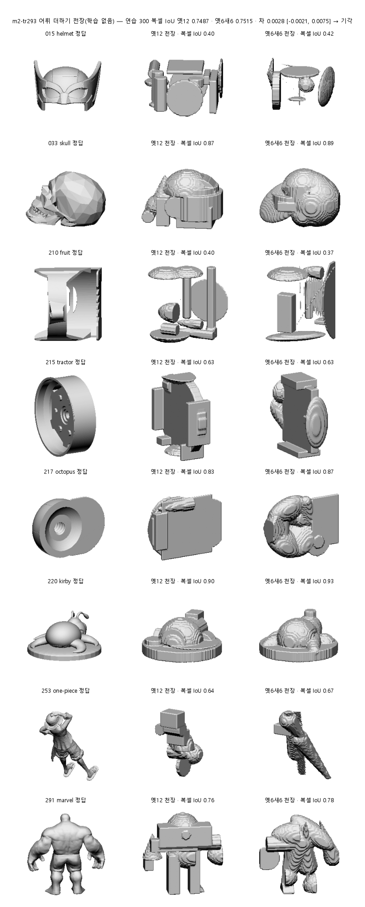

실험 m2_tr0293_h046_어휘더하기
목표 G1.2 view 모음 → 파츠별 CAD code(CadQuery · 그 전 「3 면도 → 파츠별 CAD」 · 지금 M2 는 위 · 앞 · 옆 고정 세 장만 받음 → 아무 각도 N 장으로 바꿀 것 · 11-20) · G1 첫 제품 — 피규어 · 메카 사진 여러 장 + 치수 → 숨은선 3 면도 + 파츠별 CAD · G0 임의의 이미지 → CAD 코드 · 빌린 가정 4: 정사영 · 시점앎 · 흰바탕 · 렌더화풍 · 갚는 계획: 진단 · 천장만 — 지지면 생성기 · m2 출력 칸에 새 몸을 더하는 고침 실험(실제 물체 학습 + 복셀 손실) · 그 뒤 tr292 다시(배운 m2 대 에이전트 · 합치기) · 목표 시험지 값: 안 잼 (!)
m2 어휘(몸 7 종류 · 축 셋)에 늘린 타원체 · 굵기 바뀌는 캡슐을 더하면, 같은 몸 12 개로 실제 물체(연습 300) 3D 를 더 잘 담나 — 복셀 IoU 천장이 오르나?
| 가설 | 주장 | 결과 | 근거 |
|---|---|---|---|
| m2-H46 | 옛 어휘에 늘린 타원체 · 캡슐을 더하면 같은 몸 12 개로 실제 물체 3D 를 더 잘 담는다 — 어휘를 더하면 천장이 오른다 | 기각 | 연습 300 복셀 48³ 천장 옛12 0.749 대 옛6새6 0.752 · 차 0.003 · 옛6새6 은 새 몸을 다 씀(타원체 3.0 · 캡슐 2.98 평균) — 썼는데 안 오름 · 모양 판: 해골 0.87 → 0.89 · 커비 0.90 → 0.93 · 마블 0.76 → 0.78 처럼 조금 · 헬멧 0.40 · fruit 0.40 · 0.37 은 둘 다 흩어진 조각(속 빈 · 얇은 물체) |
분석
한 줄로
물음: m2 어휘(상자·원기둥 같은 몸 7종류)에 늘린 타원체와 굵기가 바뀌는 캡슐을 더하면, 같은 몸 12개로 실제 물체 3D를 더 잘 담을까?
답: 못 담는다. 연습 300의 복셀 천장은 옛 어휘 0.749, 새 몸을 더한 어휘 0.752였다(차 0.003, 구간 [−0.002, 0.008]). 판정은 기각이다. 새 몸은 다 쓰였는데도 천장이 오르지 않았다.
왜 이 실험을 했나
tr291에서 실제 물체를 배운 m2를 봤다. 배우기는 했지만 회전체와 상자 덩어리였다. 사용자가 「배운다는 오케이인데 쓸 만하다는 아니지?」라고 물었다.
어휘가 막는지 보려고, 학습 없이 어휘로 낼 수 있는 최선(천장)을 쟀다. 더할 몸은 tr292 에이전트가 가장 많이 쓴 꼴로 골랐다. 사용자 말대로 정답은 「양자화」해서 3D 복셀로 바꿨다.
바꾼 것 하나
어휘. 두 팔을 비교했다.
- 옛 어휘: 몸 12칸 모두 옛 7종류.
- 새 몸을 더한 어휘: 옛 6칸 + 타원체 3칸 + 캡슐 3칸.
나머지는 같다. 몸 수 12, 맞추는 방법, 무작위 출발 3번, 정답 복셀 48³, 연습 300 전부다.
결과

| 새 몸 더함 | 옛 어휘(대조) | 남의 정답(바닥) | |
|---|---|---|---|
| 연습 300 복셀 천장 | 0.75 | 0.75 | 0.15 |
복셀 IoU는 정답 물체를 48×48×48 칸으로 나눠, 칸이 얼마나 겹치는지 잰 값이다. 1이 완벽이다.
왜 이렇게 나왔나
확인한 것
- 새 몸은 다 쓰였다: 새 몸을 더한 팔은 타원체 3.0개, 캡슐 2.98개를 썼다(모델 평균). 쓰였는데 천장은 안 올랐다.
- 조금씩만 오른 물체: 해골 0.87 → 0.89, 커비 0.90 → 0.93, 마블 0.76 → 0.78처럼 둥근 물체는 조금 올랐다. 컵(0.57 → 0.56)과 헬멧(0.48 → 0.46)은 내려갔다.
- 둘 다 흩어진 물체: 헬멧과 fruit(0.40 근처)는 두 팔 모두 조각이 흩어졌다. 둘 다 속이 비었거나 얇은 물체다.
- 맞추기의 한계: 어휘로 직접 만든 과녁도 0.87~0.90까지만 되찾았다. 그러니 천장도 맞추기 실력에 눌려 있다.
짐작 (아직 확인 안 함)
- 막는 것은 몸의 종류가 아니라 몸 수 12개, 속이 빈 꼴, 또는 맞추기가 국소 최적에 빠지는 것일 수 있다.
- 다음 실험인 tr294(빼기)가 속이 빈 꼴을 다룬다.
한계
- 천장도 맞추기에 눌린다: 되맞춤이 0.87~0.90이니 천장이 실제보다 낮게 나왔을 수 있다. 두 팔이 같이 눌리지만, 새 몸 팔이 조금 더 불리했다(0.866 대 0.895).
- 복셀이 거칠다: 48³ 복셀이라 얇은 것과 작은 디테일은 안 보인다.
- 몸 수가 하나다: 몸 12개로만 쟀다.
- 예측이 법칙 없이 나왔다: 이 카드는 「법칙 없음」으로 냈다. 결과 뒤 세운 법칙 L4(부피 큰 덩어리를 더하면 오른다)와 이 결과가 어긋나서, L4의 반대 근거에 넣었다.
배운 것과 다음
타원체·캡슐은 「덩어리」를 조금 더 닮게 할 뿐, 실제 물체 3D 천장은 못 올린다. 다음으로 의심할 것은 속이 빈 꼴, 몸 수, 맞추기다.
- tr294~299(빼기·기울이기·로프트·껍질·관·모두)를 판정한다. 모두 법칙 L4에서 나온 예측이고, 이 결과로 L4가 이미 흔들린다.
- 그다음 몸 수(12 → 24)와 맞추기(출발 수)를 같은 틀로 잰다.